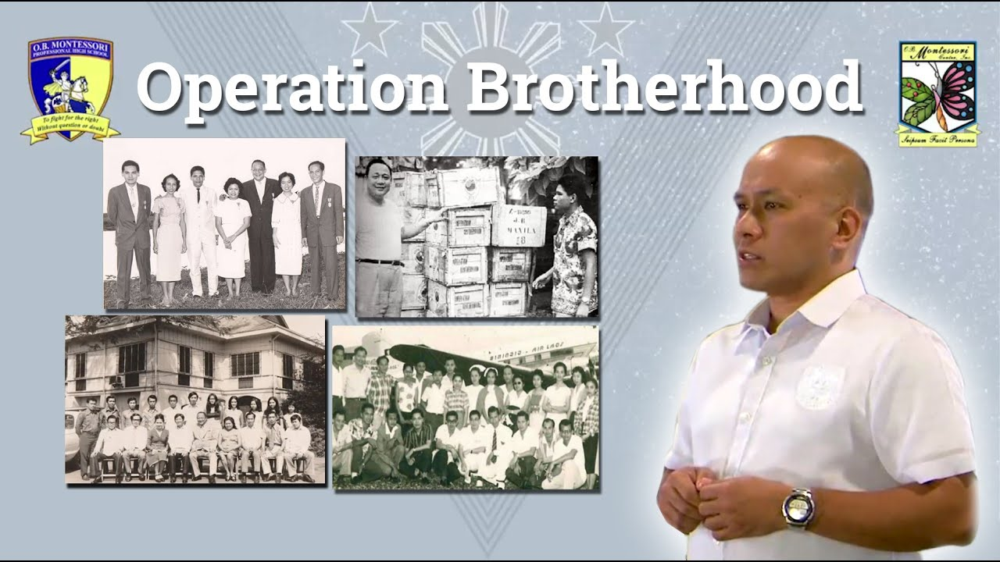

Operation Brotherhood has been providing quality education for decades. It follows the Montessori method, emphasizing hands-on learning, independence, and holistic student development. The organization operates several campuses across Luzon, ensuring students receive a nurturing and stimulating environment. Through its programs, OBMC fosters creativity, critical thinking, and personal growth in each learner. Its commitment to excellence and character building has made it one of the leading Montessori institutions in the country.
The Montessori method is an educational approach that emphasizes hands-on learning and independence. It encourages children to exploreand discover at their own pace, fostering a love for learning from an early age. Classrooms are designed to be student-centered, with materials that promote practical life skills, problem-solving, and creativity. Teachers act as guides, observing and supporting each child's individual development rather than dictating every activity. Overall, the Montessori way nurtures both academic growth and personal responsibility preparing students to become confident, curious, and capable individuals.

Operation Brotherhood Montessori Center (OBMC) began in 1966 in Manila when Dr. Preciosa S. Soliven, supported by the humanitarian organization Operation Brotherhood International, opened the first Montessori school using the educational principles developed by Dr. Maria Montessori. OBMC grew from a small children's house to a full school system with multiple campuses across Luzon, including Greenhills, Sta. Ana, Angeles City, Las Piñas, and Fairview. The school introduced Montessori education to the Philippines, emphasizing independence, hands on learning, and respect for each child's development, true to Dr. Montessori's original philosophy. Over the years, OBMC expanded its programs to include preschool through senior high school and pioneered professional high school education grounded in Montessori ideals. Today, OBMC is recognized for its long tradition of nurturing curiosity, creativity, and lifelong learning in Filipino students.